Guided Examples
This section shows examples of how to perform various tasks in CCBlade. It assumes familiarity with basic usage.
Airfoil Data
In this example we will construct an airfoil file. In this case we are interested in the NACA 4412. The XFOIL simulation data for this case is available here for ($Re = 10^6$).
using CCBlade
using PyPlotxfoildata = [
-14.000 -1.0990 0.02637 0.02282 -0.0871 0.9992 0.0166
-13.750 -1.0711 0.02533 0.02165 -0.0885 0.9979 0.0170
-13.500 -1.0462 0.02365 0.01985 -0.0903 0.9963 0.0177
-13.250 -1.0163 0.02288 0.01905 -0.0918 0.9951 0.0183
-13.000 -0.9847 0.02237 0.01850 -0.0933 0.9943 0.0189
-12.750 -0.9549 0.02183 0.01790 -0.0943 0.9930 0.0195
-12.500 -0.9260 0.02126 0.01724 -0.0952 0.9911 0.0201
-12.250 -0.8954 0.02078 0.01666 -0.0963 0.9894 0.0206
-12.000 -0.8682 0.01946 0.01525 -0.0976 0.9877 0.0214
-11.750 -0.8365 0.01894 0.01471 -0.0990 0.9866 0.0220
-11.500 -0.8038 0.01852 0.01424 -0.1004 0.9857 0.0227
-11.250 -0.7707 0.01808 0.01375 -0.1019 0.9849 0.0235
-11.000 -0.7369 0.01769 0.01328 -0.1035 0.9843 0.0242
-10.750 -0.7070 0.01745 0.01297 -0.1041 0.9819 0.0246
-10.500 -0.6803 0.01619 0.01161 -0.1049 0.9793 0.0257
-10.250 -0.6491 0.01569 0.01109 -0.1060 0.9775 0.0264
-10.000 -0.6172 0.01529 0.01065 -0.1071 0.9759 0.0271
-9.750 -0.5850 0.01491 0.01022 -0.1082 0.9742 0.0279
-9.500 -0.5547 0.01456 0.00981 -0.1089 0.9718 0.0287
-9.250 -0.5287 0.01426 0.00944 -0.1085 0.9665 0.0292
-9.000 -0.5023 0.01345 0.00855 -0.1085 0.9622 0.0299
-8.750 -0.4769 0.01285 0.00791 -0.1082 0.9574 0.0309
-8.500 -0.4513 0.01249 0.00752 -0.1078 0.9519 0.0317
-8.250 -0.4243 0.01214 0.00713 -0.1076 0.9474 0.0324
-8.000 -0.3979 0.01184 0.00678 -0.1073 0.9422 0.0333
-7.750 -0.3715 0.01155 0.00644 -0.1070 0.9363 0.0340
-7.500 -0.3442 0.01127 0.00609 -0.1068 0.9313 0.0345
-7.250 -0.3183 0.01080 0.00556 -0.1064 0.9249 0.0354
-7.000 -0.2921 0.01033 0.00505 -0.1061 0.9186 0.0365
-6.750 -0.2649 0.01003 0.00471 -0.1059 0.9125 0.0375
-6.500 -0.2377 0.00977 0.00441 -0.1057 0.9053 0.0384
-6.000 -0.1825 0.00935 0.00389 -0.1054 0.8910 0.0404
-5.750 -0.1549 0.00912 0.00360 -0.1052 0.8835 0.0414
-5.500 -0.1275 0.00880 0.00325 -0.1051 0.8751 0.0435
-5.000 -0.0718 0.00845 0.00283 -0.1049 0.8578 0.0476
-4.750 -0.0441 0.00824 0.00259 -0.1047 0.8488 0.0519
-4.500 -0.0162 0.00810 0.00243 -0.1046 0.8388 0.0569
-4.250 0.0117 0.00793 0.00228 -0.1045 0.8288 0.0655
-4.000 0.0394 0.00780 0.00213 -0.1044 0.8184 0.0745
-3.750 0.0674 0.00769 0.00201 -0.1044 0.8073 0.0820
-3.500 0.0954 0.00761 0.00191 -0.1043 0.7964 0.0890
-3.250 0.1232 0.00752 0.00180 -0.1042 0.7851 0.0977
-3.000 0.1512 0.00745 0.00171 -0.1041 0.7733 0.1066
-2.750 0.1791 0.00737 0.00163 -0.1040 0.7616 0.1182
-2.500 0.2069 0.00729 0.00156 -0.1040 0.7497 0.1332
-2.250 0.2346 0.00723 0.00150 -0.1039 0.7378 0.1502
-2.000 0.2625 0.00715 0.00145 -0.1038 0.7254 0.1697
-1.750 0.2903 0.00709 0.00142 -0.1038 0.7132 0.1927
-1.500 0.3180 0.00703 0.00141 -0.1037 0.7012 0.2214
-1.250 0.3456 0.00701 0.00139 -0.1036 0.6886 0.2466
-1.000 0.3734 0.00697 0.00138 -0.1035 0.6754 0.2686
-0.750 0.4012 0.00694 0.00137 -0.1035 0.6626 0.2903
-0.500 0.4288 0.00691 0.00138 -0.1034 0.6497 0.3203
-0.250 0.4562 0.00686 0.00139 -0.1033 0.6365 0.3629
0.000 0.4833 0.00678 0.00141 -0.1032 0.6232 0.4192
0.250 0.5102 0.00658 0.00146 -0.1031 0.6101 0.5177
0.500 0.5366 0.00635 0.00153 -0.1029 0.5975 0.6393
0.750 0.5622 0.00617 0.00160 -0.1024 0.5856 0.7449
1.000 0.5842 0.00594 0.00170 -0.1009 0.5740 0.8717
1.250 0.6163 0.00588 0.00177 -0.1014 0.5622 0.9842
1.500 0.6525 0.00598 0.00181 -0.1033 0.5505 1.0000
1.750 0.6788 0.00611 0.00186 -0.1029 0.5398 1.0000
2.000 0.7055 0.00622 0.00192 -0.1026 0.5294 1.0000
2.250 0.7325 0.00633 0.00199 -0.1024 0.5204 1.0000
2.500 0.7592 0.00646 0.00206 -0.1022 0.5112 1.0000
2.750 0.7865 0.00656 0.00213 -0.1020 0.5029 1.0000
3.250 0.8405 0.00681 0.00231 -0.1016 0.4847 1.0000
3.500 0.8672 0.00696 0.00240 -0.1014 0.4746 1.0000
3.750 0.8941 0.00709 0.00250 -0.1012 0.4646 1.0000
4.000 0.9210 0.00722 0.00260 -0.1010 0.4540 1.0000
4.250 0.9473 0.00739 0.00272 -0.1007 0.4426 1.0000
4.500 0.9734 0.00758 0.00284 -0.1004 0.4273 1.0000
4.750 0.9993 0.00778 0.00297 -0.1001 0.4110 1.0000
5.000 1.0254 0.00797 0.00311 -0.0998 0.3979 1.0000
5.250 1.0518 0.00813 0.00326 -0.0995 0.3861 1.0000
5.500 1.0777 0.00834 0.00342 -0.0992 0.3731 1.0000
5.750 1.1031 0.00857 0.00359 -0.0988 0.3575 1.0000
6.000 1.1280 0.00884 0.00379 -0.0983 0.3398 1.0000
6.250 1.1523 0.00914 0.00401 -0.0978 0.3207 1.0000
6.500 1.1761 0.00948 0.00426 -0.0971 0.2993 1.0000
6.750 1.1988 0.00989 0.00455 -0.0963 0.2737 1.0000
7.000 1.2208 0.01036 0.00488 -0.0954 0.2461 1.0000
7.250 1.2417 0.01089 0.00526 -0.0943 0.2173 1.0000
7.500 1.2614 0.01149 0.00569 -0.0931 0.1865 1.0000
7.750 1.2793 0.01220 0.00621 -0.0915 0.1526 1.0000
8.000 1.2973 0.01288 0.00672 -0.0900 0.1252 1.0000
8.250 1.3164 0.01345 0.00719 -0.0887 0.1065 1.0000
8.500 1.3346 0.01404 0.00769 -0.0872 0.0893 1.0000
8.750 1.3514 0.01469 0.00823 -0.0854 0.0729 1.0000
9.000 1.3676 0.01527 0.00875 -0.0836 0.0622 1.0000
9.250 1.3835 0.01581 0.00926 -0.0817 0.0563 1.0000
9.500 1.4004 0.01631 0.00976 -0.0799 0.0521 1.0000
9.750 1.4171 0.01682 0.01028 -0.0782 0.0491 1.0000
10.000 1.4317 0.01746 0.01091 -0.0762 0.0459 1.0000
10.250 1.4484 0.01797 0.01147 -0.0746 0.0442 1.0000
10.500 1.4653 0.01849 0.01203 -0.0731 0.0427 1.0000
10.750 1.4805 0.01911 0.01267 -0.0714 0.0411 1.0000
11.000 1.4938 0.01986 0.01343 -0.0695 0.0392 1.0000
11.250 1.5061 0.02069 0.01430 -0.0676 0.0376 1.0000
11.500 1.5221 0.02129 0.01495 -0.0662 0.0368 1.0000
11.750 1.5369 0.02199 0.01570 -0.0647 0.0356 1.0000
12.000 1.5500 0.02282 0.01656 -0.0631 0.0343 1.0000
12.250 1.5608 0.02382 0.01758 -0.0614 0.0330 1.0000
12.500 1.5688 0.02506 0.01888 -0.0594 0.0316 1.0000
12.750 1.5831 0.02588 0.01975 -0.0582 0.0308 1.0000
13.000 1.5959 0.02683 0.02075 -0.0569 0.0298 1.0000
13.250 1.6066 0.02796 0.02192 -0.0555 0.0286 1.0000
13.500 1.6141 0.02939 0.02338 -0.0540 0.0273 1.0000
13.750 1.6213 0.03089 0.02494 -0.0526 0.0262 1.0000
14.000 1.6325 0.03209 0.02620 -0.0516 0.0252 1.0000
14.250 1.6414 0.03354 0.02770 -0.0505 0.0241 1.0000
14.500 1.6474 0.03528 0.02947 -0.0493 0.0229 1.0000
14.750 1.6508 0.03731 0.03156 -0.0482 0.0218 1.0000
15.000 1.6585 0.03899 0.03332 -0.0474 0.0209 1.0000
15.250 1.6638 0.04096 0.03533 -0.0466 0.0198 1.0000
15.500 1.6661 0.04330 0.03772 -0.0458 0.0187 1.0000
15.750 1.6666 0.04589 0.04037 -0.0451 0.0179 1.0000
16.000 1.6698 0.04827 0.04284 -0.0447 0.0171 1.0000
16.250 1.6706 0.05099 0.04562 -0.0443 0.0164 1.0000
16.500 1.6692 0.05402 0.04871 -0.0440 0.0157 1.0000
16.750 1.6638 0.05759 0.05235 -0.0439 0.0151 1.0000
17.000 1.6605 0.06101 0.05587 -0.0439 0.0146 1.0000
17.250 1.6584 0.06435 0.05931 -0.0441 0.0142 1.0000
17.500 1.6548 0.06793 0.06298 -0.0444 0.0138 1.0000
17.750 1.6497 0.07175 0.06689 -0.0448 0.0134 1.0000
18.000 1.6430 0.07583 0.07106 -0.0453 0.0131 1.0000
18.250 1.6346 0.08024 0.07555 -0.0461 0.0128 1.0000
18.500 1.6237 0.08507 0.08047 -0.0470 0.0124 1.0000
18.750 1.6097 0.09040 0.08590 -0.0482 0.0121 1.0000
]
alpha_0 = xfoildata[:, 1] * pi/180
cl_0 = xfoildata[:, 2]
cd_0 = xfoildata[:, 3]129-element Vector{Float64}:
0.02637
0.02533
0.02365
0.02288
0.02237
0.02183
0.02126
0.02078
0.01946
0.01894
⋮
0.05759
0.06101
0.06435
0.06793
0.07175
0.07583
0.08024
0.08507
0.0904figure()
plot(alpha_0, cl_0)
xlabel(L"\alpha")
ylabel(L"c_l")
savefig("cl1.svg")
figure()
plot(alpha_0, cd_0)
xlabel(L"\alpha")
ylabel(L"c_d")
savefig("cd1.svg")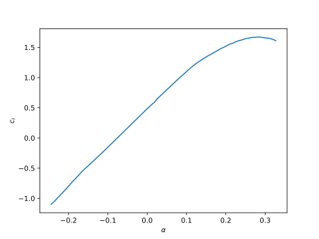 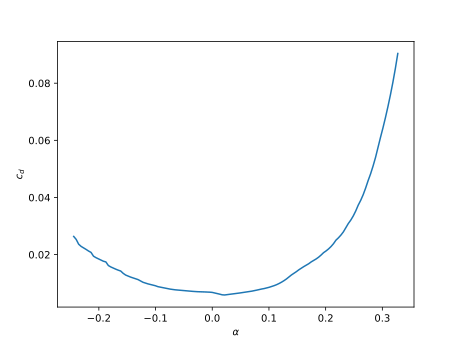
We now need to extrapolate the data to higher angles of attack. Even though the propeller/turbine operation might not operate outside of these angles, the solver often needs to evaluate a range of angles during the solution process so it is helpful to provide data from $-\pi$ to $\pi$. We will use the Viterna extrapolation, and for that we just need to know the nondimensional chord ratio (chord/R) at 75% radius. We will use the values for the APC thin electric 10 x 5 propeller that we used in the first tutorial.
# ---- extrapolate ------
cr75 = 0.128
alpha_ext, cl_ext, cd_ext = viterna(alpha_0, cl_0, cd_0, cr75)([-3.141592653589793, -3.0836477224235814, -3.0257027912573697, -2.967757860091158, -2.9098129289249464, -2.8518679977587342, -2.7939230665925225, -2.735978135426311, -2.678033204260099, -2.6200882730938875 … 2.635010838198439, 2.691297706575256, 2.7475845749520733, 2.8038714433288905, 2.8601583117057077, 2.9164451800825244, 2.9727320484593416, 3.0290189168361588, 3.085305785212976, 3.141592653589793], [0.0, 0.18243399999999982, 0.36486799999999964, 0.5473019999999994, 0.7297359999999993, 0.7053994341667585, 0.6562815730116924, 0.6273996840759655, 0.6093582687498438, 0.5967871053637582 … -0.8183765941368717, -0.8712799868292324, -0.9402789295853854, -1.035732584848786, -1.1604244615384607, -0.9283395692307701, -0.6962546769230776, -0.46416978461538505, -0.23208489230769253, 0.0], [0.0001, 0.0001, 0.0001, 0.0001, 0.019024005606270815, 0.05582677981886336, 0.09980427017668556, 0.1503753113630903, 0.20687181459488335, 0.26854769560365205 … 0.2516582139586473, 0.1928821471301378, 0.13916258737745893, 0.09116889424159921, 0.04949929816016125, 0.014673356784623885, 0.0001, 0.0001, 0.0001, 0.0001])figure()
plot(alpha_ext, cl_ext)
xlabel(L"\alpha")
ylabel(L"c_l")
savefig("cl2.svg")
figure()
plot(alpha_ext, cd_ext)
xlabel(L"\alpha")
ylabel(L"c_d")
savefig("cd2.svg")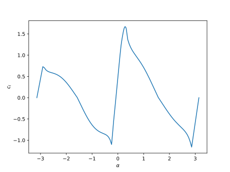 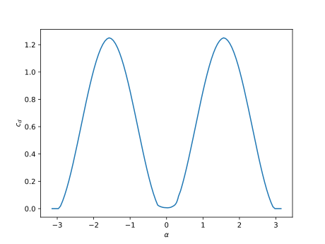
Now we need to add various corrections. These can either be done beforehand, or they can be evaluated on the fly. In general one needs corrections for rotation (three-dimensional stall delay), Reynolds number, and Mach number. The most accurate approach is to precompute the variation in Reynolds and Mach number and to evaluate rotation corrections on the fly. However, all three can be done in any combination of precomputing or on-the-fly. For the example we will start with the most accurate case (precompute Re/Mach and on-the-fly rotation), but will show the other variations as well.
To address Reynolds number and Mach number variations beforehand we create 2D or 3D splines. CCBlade provides helper functions for those scenarios. The process is the same for Reynolds number and Mach number, and because the Mach number variation is not significant for this small propeller we will ignore it and focus just on Reynolds number. For Reynolds number variation we would repeat the above process at multiple Reynolds numbers. In this example we will use three different Reynolds numbers.
# data previously computed for Re = 1e6, renaming for convenience
alpha3, cl3, cd3 = alpha_ext, cl_ext, cd_ext
# ---- Re = 5e5 ------
xfoildata2 = [
-12.250 -0.8284 0.04176 0.03861 -0.0832 1.0000 0.0246
-12.000 -0.8522 0.03908 0.03574 -0.0799 1.0000 0.0247
-11.750 -0.8699 0.03540 0.03185 -0.0776 0.9997 0.0251
-11.500 -0.8415 0.03435 0.03082 -0.0796 0.9977 0.0258
-11.250 -0.8114 0.03347 0.02989 -0.0818 0.9957 0.0265
-11.000 -0.7822 0.03202 0.02830 -0.0843 0.9939 0.0275
-10.750 -0.7591 0.02982 0.02579 -0.0862 0.9905 0.0285
-10.500 -0.7309 0.02822 0.02384 -0.0882 0.9877 0.0293
-10.250 -0.7053 0.02556 0.02100 -0.0903 0.9856 0.0304
-10.000 -0.6714 0.02497 0.02039 -0.0924 0.9843 0.0314
-9.750 -0.6435 0.02420 0.01952 -0.0932 0.9807 0.0325
-9.500 -0.6134 0.02311 0.01823 -0.0945 0.9778 0.0336
-9.250 -0.5802 0.02227 0.01716 -0.0962 0.9758 0.0345
-9.000 -0.5492 0.02031 0.01504 -0.0982 0.9742 0.0359
-8.750 -0.5132 0.01962 0.01432 -0.1004 0.9731 0.0371
-8.500 -0.4849 0.01894 0.01355 -0.1008 0.9683 0.0381
-8.250 -0.4502 0.01823 0.01273 -0.1025 0.9656 0.0394
-8.000 -0.4135 0.01756 0.01192 -0.1045 0.9637 0.0405
-7.750 -0.3794 0.01639 0.01059 -0.1062 0.9619 0.0416
-7.500 -0.3455 0.01547 0.00965 -0.1078 0.9602 0.0430
-7.250 -0.3201 0.01501 0.00917 -0.1073 0.9539 0.0442
-7.000 -0.2893 0.01445 0.00854 -0.1080 0.9502 0.0454
-6.750 -0.2573 0.01389 0.00791 -0.1088 0.9471 0.0467
-6.500 -0.2303 0.01351 0.00746 -0.1085 0.9415 0.0478
-6.250 -0.2035 0.01278 0.00668 -0.1083 0.9357 0.0494
-6.000 -0.1743 0.01225 0.00613 -0.1085 0.9314 0.0512
-5.750 -0.1485 0.01190 0.00577 -0.1080 0.9242 0.0529
-5.500 -0.1206 0.01155 0.00536 -0.1078 0.9180 0.0550
-5.250 -0.0931 0.01118 0.00493 -0.1076 0.9117 0.0575
-5.000 -0.0666 0.01079 0.00457 -0.1072 0.9038 0.0614
-4.750 -0.0382 0.01055 0.00427 -0.1071 0.8974 0.0656
-4.500 -0.0118 0.01018 0.00393 -0.1067 0.8884 0.0727
-4.250 0.0161 0.00990 0.00363 -0.1066 0.8810 0.0812
-4.000 0.0434 0.00973 0.00343 -0.1063 0.8716 0.0897
-3.750 0.0710 0.00948 0.00321 -0.1061 0.8628 0.1006
-3.500 0.0987 0.00929 0.00301 -0.1060 0.8534 0.1110
-3.250 0.1262 0.00913 0.00285 -0.1058 0.8432 0.1221
-3.000 0.1541 0.00898 0.00269 -0.1056 0.8335 0.1353
-2.750 0.1815 0.00882 0.00255 -0.1054 0.8224 0.1520
-2.500 0.2090 0.00867 0.00244 -0.1053 0.8113 0.1733
-2.250 0.2366 0.00855 0.00235 -0.1051 0.8004 0.1993
-2.000 0.2641 0.00844 0.00229 -0.1049 0.7887 0.2300
-1.750 0.2915 0.00833 0.00224 -0.1048 0.7765 0.2579
-1.500 0.3190 0.00826 0.00218 -0.1046 0.7645 0.2832
-1.250 0.3463 0.00818 0.00213 -0.1044 0.7525 0.3117
-1.000 0.3734 0.00807 0.00209 -0.1042 0.7397 0.3503
-0.750 0.4003 0.00792 0.00208 -0.1040 0.7267 0.4055
-0.500 0.4265 0.00766 0.00208 -0.1038 0.7141 0.5024
-0.250 0.4513 0.00733 0.00214 -0.1031 0.7014 0.6445
0.000 0.4741 0.00703 0.00220 -0.1018 0.6886 0.7752
0.250 0.4944 0.00681 0.00229 -0.0995 0.6757 0.9086
0.500 0.5429 0.00683 0.00228 -0.1037 0.6616 0.9948
0.750 0.5727 0.00693 0.00228 -0.1041 0.6484 1.0000
1.000 0.5983 0.00705 0.00231 -0.1035 0.6356 1.0000
1.250 0.6239 0.00719 0.00235 -0.1030 0.6230 1.0000
1.500 0.6499 0.00731 0.00240 -0.1026 0.6104 1.0000
1.750 0.6761 0.00744 0.00246 -0.1022 0.5984 1.0000
2.000 0.7023 0.00759 0.00253 -0.1018 0.5871 1.0000
2.250 0.7283 0.00775 0.00260 -0.1014 0.5758 1.0000
2.500 0.7548 0.00788 0.00269 -0.1011 0.5646 1.0000
2.750 0.7811 0.00804 0.00279 -0.1007 0.5544 1.0000
3.000 0.8073 0.00820 0.00290 -0.1004 0.5444 1.0000
3.250 0.8339 0.00834 0.00302 -0.1001 0.5349 1.0000
3.500 0.8600 0.00854 0.00314 -0.0998 0.5260 1.0000
3.750 0.8867 0.00866 0.00327 -0.0995 0.5166 1.0000
4.000 0.9127 0.00884 0.00341 -0.0992 0.5067 1.0000
4.250 0.9385 0.00902 0.00355 -0.0988 0.4957 1.0000
4.500 0.9647 0.00917 0.00370 -0.0984 0.4849 1.0000
4.750 0.9903 0.00937 0.00385 -0.0980 0.4741 1.0000
5.000 1.0155 0.00957 0.00400 -0.0975 0.4618 1.0000
5.250 1.0403 0.00977 0.00416 -0.0970 0.4460 1.0000
5.500 1.0652 0.00997 0.00433 -0.0964 0.4309 1.0000
5.750 1.0906 0.01016 0.00452 -0.0960 0.4187 1.0000
6.000 1.1155 0.01038 0.00472 -0.0955 0.4067 1.0000
6.250 1.1399 0.01063 0.00495 -0.0949 0.3935 1.0000
6.500 1.1639 0.01090 0.00518 -0.0942 0.3784 1.0000
6.750 1.1875 0.01119 0.00543 -0.0935 0.3609 1.0000
7.000 1.2103 0.01152 0.00571 -0.0927 0.3410 1.0000
7.250 1.2318 0.01193 0.00603 -0.0917 0.3191 1.0000
7.500 1.2528 0.01238 0.00639 -0.0906 0.2935 1.0000
7.750 1.2718 0.01294 0.00682 -0.0892 0.2643 1.0000
8.000 1.2891 0.01362 0.00734 -0.0876 0.2320 1.0000
8.250 1.3042 0.01442 0.00794 -0.0856 0.1973 1.0000
8.500 1.3175 0.01531 0.00862 -0.0834 0.1607 1.0000
8.750 1.3282 0.01622 0.00934 -0.0807 0.1301 1.0000
9.000 1.3388 0.01711 0.01011 -0.0781 0.1080 1.0000
9.250 1.3500 0.01798 0.01089 -0.0756 0.0904 1.0000
9.500 1.3615 0.01884 0.01169 -0.0732 0.0782 1.0000
9.750 1.3735 0.01968 0.01251 -0.0709 0.0704 1.0000
10.000 1.3845 0.02060 0.01340 -0.0687 0.0648 1.0000
10.250 1.3969 0.02144 0.01429 -0.0667 0.0610 1.0000
10.500 1.4094 0.02230 0.01519 -0.0648 0.0580 1.0000
10.750 1.4184 0.02340 0.01630 -0.0626 0.0550 1.0000
11.000 1.4270 0.02457 0.01753 -0.0605 0.0528 1.0000
11.250 1.4395 0.02551 0.01855 -0.0589 0.0510 1.0000
11.500 1.4503 0.02659 0.01969 -0.0573 0.0492 1.0000
11.750 1.4584 0.02791 0.02104 -0.0555 0.0473 1.0000
12.000 1.4602 0.02976 0.02294 -0.0533 0.0455 1.0000
12.250 1.4688 0.03116 0.02443 -0.0519 0.0443 1.0000
12.500 1.4791 0.03246 0.02581 -0.0507 0.0429 1.0000
12.750 1.4875 0.03395 0.02738 -0.0495 0.0414 1.0000
13.000 1.4938 0.03568 0.02917 -0.0483 0.0400 1.0000
13.250 1.4941 0.03801 0.03154 -0.0469 0.0387 1.0000
13.500 1.4941 0.04045 0.03407 -0.0457 0.0375 1.0000
13.750 1.5030 0.04212 0.03584 -0.0450 0.0363 1.0000
14.000 1.5091 0.04410 0.03790 -0.0444 0.0349 1.0000
14.250 1.5135 0.04630 0.04017 -0.0438 0.0337 1.0000
14.500 1.5126 0.04913 0.04305 -0.0432 0.0326 1.0000
14.750 1.5064 0.05260 0.04659 -0.0426 0.0315 1.0000
15.000 1.5124 0.05486 0.04898 -0.0424 0.0305 1.0000
15.250 1.5153 0.05748 0.05169 -0.0423 0.0294 1.0000
15.500 1.5171 0.06031 0.05459 -0.0423 0.0283 1.0000
15.750 1.5155 0.06359 0.05793 -0.0425 0.0274 1.0000
16.000 1.5055 0.06789 0.06228 -0.0426 0.0265 1.0000
16.250 1.5080 0.07082 0.06534 -0.0429 0.0257 1.0000
16.500 1.5081 0.07407 0.06871 -0.0433 0.0248 1.0000
16.750 1.5068 0.07756 0.07229 -0.0439 0.0240 1.0000
17.000 1.5043 0.08125 0.07605 -0.0445 0.0233 1.0000
17.250 1.4987 0.08538 0.08024 -0.0453 0.0226 1.0000
]
alpha = xfoildata2[:, 1] * pi/180
cl = xfoildata2[:, 2]
cd = xfoildata2[:, 3]
alpha2, cl2, cd2 = viterna(alpha, cl, cd, cr75)
# ------ Re = 2e5 ---------
xfoildata1 = [
-8.500 -0.4088 0.08983 0.08647 -0.0344 1.0000 0.0813
-8.250 -0.4231 0.08831 0.08501 -0.0315 1.0000 0.0823
-8.000 -0.4442 0.08695 0.08373 -0.0282 1.0000 0.0831
-7.750 -0.4937 0.05313 0.04929 -0.0671 0.9865 0.0673
-7.500 -0.4712 0.04655 0.04243 -0.0720 0.9817 0.0641
-7.250 -0.4535 0.03731 0.03244 -0.0777 0.9755 0.0622
-7.000 -0.4231 0.03226 0.02667 -0.0816 0.9717 0.0637
-6.750 -0.3952 0.02910 0.02295 -0.0831 0.9655 0.0647
-6.500 -0.3582 0.02703 0.02031 -0.0857 0.9620 0.0660
-6.250 -0.3204 0.02462 0.01772 -0.0887 0.9600 0.0684
-6.000 -0.2930 0.02357 0.01656 -0.0890 0.9523 0.0702
-5.750 -0.2544 0.02238 0.01517 -0.0913 0.9489 0.0725
-5.500 -0.2129 0.02134 0.01390 -0.0940 0.9465 0.0756
-5.250 -0.1843 0.02032 0.01270 -0.0942 0.9393 0.0785
-5.000 -0.1466 0.01934 0.01174 -0.0963 0.9352 0.0824
-4.750 -0.1047 0.01855 0.01086 -0.0990 0.9326 0.0877
-4.500 -0.0618 0.01758 0.00989 -0.1020 0.9308 0.0951
-4.250 -0.0351 0.01719 0.00943 -0.1016 0.9217 0.1030
-4.000 0.0030 0.01638 0.00871 -0.1036 0.9180 0.1150
-3.750 0.0426 0.01571 0.00806 -0.1058 0.9151 0.1299
-3.500 0.0687 0.01531 0.00771 -0.1053 0.9057 0.1437
-3.250 0.1047 0.01477 0.00720 -0.1066 0.9011 0.1620
-3.000 0.1342 0.01437 0.00686 -0.1068 0.8934 0.1821
-2.750 0.1659 0.01392 0.00653 -0.1073 0.8865 0.2077
-2.500 0.1964 0.01352 0.00623 -0.1075 0.8792 0.2377
-2.250 0.2255 0.01312 0.00593 -0.1075 0.8706 0.2707
-2.000 0.2541 0.01274 0.00566 -0.1074 0.8618 0.3065
-1.750 0.2836 0.01233 0.00537 -0.1074 0.8533 0.3489
-1.500 0.3098 0.01195 0.00520 -0.1069 0.8424 0.4005
-1.250 0.3373 0.01136 0.00499 -0.1066 0.8336 0.5000
-1.000 0.3583 0.01070 0.00498 -0.1046 0.8222 0.6832
-0.500 0.4431 0.00999 0.00468 -0.1085 0.8021 1.0000
-0.250 0.4683 0.01000 0.00456 -0.1077 0.7890 1.0000
0.000 0.4938 0.01005 0.00448 -0.1071 0.7758 1.0000
0.250 0.5198 0.01011 0.00441 -0.1065 0.7629 1.0000
0.500 0.5464 0.01019 0.00435 -0.1060 0.7504 1.0000
0.750 0.5733 0.01027 0.00429 -0.1056 0.7383 1.0000
1.000 0.5988 0.01039 0.00431 -0.1050 0.7246 1.0000
1.250 0.6247 0.01052 0.00435 -0.1045 0.7115 1.0000
1.500 0.6510 0.01066 0.00439 -0.1040 0.6992 1.0000
1.750 0.6778 0.01082 0.00443 -0.1036 0.6876 1.0000
2.000 0.7038 0.01097 0.00451 -0.1032 0.6752 1.0000
2.250 0.7297 0.01115 0.00463 -0.1027 0.6629 1.0000
2.500 0.7561 0.01133 0.00474 -0.1023 0.6517 1.0000
2.750 0.7828 0.01152 0.00483 -0.1020 0.6409 1.0000
3.000 0.8084 0.01171 0.00500 -0.1014 0.6289 1.0000
3.250 0.8345 0.01191 0.00515 -0.1010 0.6180 1.0000
3.500 0.8613 0.01213 0.00528 -0.1007 0.6079 1.0000
3.750 0.8865 0.01233 0.00549 -0.1002 0.5965 1.0000
4.000 0.9127 0.01256 0.00569 -0.0998 0.5863 1.0000
4.250 0.9390 0.01280 0.00587 -0.0995 0.5765 1.0000
4.500 0.9643 0.01303 0.00613 -0.0990 0.5659 1.0000
4.750 0.9905 0.01330 0.00636 -0.0986 0.5563 1.0000
5.000 1.0156 0.01352 0.00657 -0.0980 0.5448 1.0000
5.250 1.0396 0.01373 0.00679 -0.0972 0.5317 1.0000
5.500 1.0639 0.01396 0.00701 -0.0965 0.5191 1.0000
5.750 1.0888 0.01422 0.00724 -0.0959 0.5080 1.0000
6.000 1.1122 0.01444 0.00743 -0.0950 0.4940 1.0000
6.250 1.1342 0.01464 0.00764 -0.0938 0.4781 1.0000
6.500 1.1562 0.01486 0.00788 -0.0927 0.4627 1.0000
6.750 1.1783 0.01510 0.00815 -0.0916 0.4482 1.0000
7.000 1.2002 0.01536 0.00845 -0.0905 0.4333 1.0000
7.250 1.2215 0.01565 0.00876 -0.0893 0.4177 1.0000
7.500 1.2420 0.01596 0.00908 -0.0880 0.4012 1.0000
7.750 1.2616 0.01630 0.00943 -0.0866 0.3835 1.0000
8.000 1.2799 0.01670 0.00982 -0.0849 0.3635 1.0000
8.250 1.2967 0.01714 0.01026 -0.0831 0.3392 1.0000
8.500 1.3110 0.01772 0.01076 -0.0809 0.3110 1.0000
8.750 1.3218 0.01847 0.01138 -0.0781 0.2773 1.0000
9.000 1.3267 0.01944 0.01217 -0.0745 0.2406 1.0000
9.250 1.3283 0.02069 0.01320 -0.0706 0.1997 1.0000
9.500 1.3275 0.02223 0.01449 -0.0667 0.1617 1.0000
9.750 1.3266 0.02391 0.01597 -0.0630 0.1356 1.0000
10.000 1.3275 0.02555 0.01752 -0.0598 0.1187 1.0000
10.250 1.3289 0.02726 0.01916 -0.0569 0.1080 1.0000
10.500 1.3326 0.02887 0.02077 -0.0544 0.1001 1.0000
10.750 1.3366 0.03055 0.02249 -0.0520 0.0942 1.0000
11.000 1.3429 0.03209 0.02408 -0.0501 0.0890 1.0000
11.250 1.3438 0.03415 0.02607 -0.0479 0.0848 1.0000
11.500 1.3530 0.03558 0.02764 -0.0464 0.0812 1.0000
11.750 1.3601 0.03722 0.02934 -0.0450 0.0776 1.0000
12.000 1.3641 0.03917 0.03125 -0.0433 0.0746 1.0000
12.250 1.3713 0.04092 0.03309 -0.0418 0.0719 1.0000
12.500 1.3790 0.04262 0.03491 -0.0407 0.0690 1.0000
12.750 1.3857 0.04441 0.03676 -0.0395 0.0664 1.0000
13.000 1.3923 0.04629 0.03859 -0.0382 0.0639 1.0000
13.250 1.4001 0.04814 0.04054 -0.0369 0.0616 1.0000
13.500 1.4059 0.05012 0.04268 -0.0360 0.0593 1.0000
13.750 1.4115 0.05212 0.04477 -0.0351 0.0571 1.0000
14.000 1.4180 0.05407 0.04670 -0.0342 0.0549 1.0000
14.250 1.4266 0.05607 0.04875 -0.0329 0.0527 1.0000
14.500 1.4286 0.05852 0.05141 -0.0322 0.0509 1.0000
14.750 1.4308 0.06101 0.05404 -0.0316 0.0491 1.0000
15.000 1.4342 0.06336 0.05644 -0.0312 0.0473 1.0000
15.250 1.4467 0.06514 0.05814 -0.0297 0.0450 1.0000
15.500 1.4416 0.06845 0.06172 -0.0297 0.0440 1.0000
15.750 1.4385 0.07175 0.06524 -0.0296 0.0427 1.0000
16.000 1.4362 0.07501 0.06865 -0.0296 0.0414 1.0000
16.250 1.4351 0.07813 0.07188 -0.0298 0.0401 1.0000
16.500 1.4392 0.08059 0.07434 -0.0296 0.0388 1.0000
16.750 1.4401 0.08377 0.07759 -0.0291 0.0376 1.0000
17.000 1.4274 0.08864 0.08274 -0.0304 0.0369 1.0000
17.250 1.4151 0.09369 0.08804 -0.0318 0.0363 1.0000
]
alpha = xfoildata1[:, 1] * pi/180
cl = xfoildata1[:, 2]
cd = xfoildata1[:, 3]
alpha1, cl1, cd1 = viterna(alpha, cl, cd, cr75)All the data must be the same angles of attack. They are not in this case, so we need to interpolate the data onto a common set. Next, we combine the cl and cd data into one matrix. To do the interpolation we are going to use the FLOWMath package (which is already a dependency of CCBlade so should already be installed).
import FLOWMath
# interpolate onto alpha1-
cl2 = FLOWMath.linear(alpha2, cl2, alpha1)
cd2 = FLOWMath.linear(alpha2, cd2, alpha1)
cl3 = FLOWMath.linear(alpha3, cl3, alpha1)
cd3 = FLOWMath.linear(alpha3, cd3, alpha1)
alpha = alpha1
Re = [2e5, 5e5, 1e6]
cl = [cl1 cl2 cl3] # cl[i, j] corresponds to alpha[i], Re[j]
cd = [cd1 cd2 cd3]We can load that data directly into an airfoil object for usage in CCBlade. The airfoil object creates a smooth spline based on the data (an Akima spline, or recursive Akima splines in higher dimensions).
af = AlphaReAF(alpha, Re, cl, cd, "NACA4412 (no rotation)")More commonly we first save it to a file so we don't have to repeat these calculations when we want to reuse this airfoil in future simulations. We added the subscript norot in the file name just to remind ourselves that this data does not have rotational corrections.
One file corresponds to one Reynolds number and one Mach number. The file format first contains one header line. That is just a convenience to provide information about the airfoil data. The next line is the Reynolds number, and the next line is the Mach number. The rest of the file contains data in columns split by whitespace (not commas) in the following order: alpha, cl, cd. You can add additional columns of data (e.g., cm), but they will be ignored. For example, a simple file (a cylinder section) would look like:
Cylinder section with a Cd of 0.50. Re = 1 million.
1e6
0.0
-180.0 0.000 0.5000 0.000
0.00 0.000 0.5000 0.000
180.0 0.000 0.5000 0.000For this case we have three Reynolds numbers so we need to specify three file names.
filenames = ["naca4412_2e5_norot.dat", "naca4412_5e5_norot.dat", "naca4412_1e6_norot.dat"]
write_af(filenames, af)To reload the data from file later we can use:
af2 = AlphaReAF(filenames, radians=true) # angle of attack is given in radians in the fileTo have CCBlade apply rotation corrections on the fly we need to choose a method. We will use the Du-Selig correction for lift and the Eggers correction for drag. We pass this into the rotation keyword on the Rotor struct.
Rtip = 10/2.0 * 0.0254 # inches to meters
Rhub = 0.10*Rtip
B = 2 # number of blades
du = DuSeligEggers()
rotor = Rotor(Rhub, Rtip, B, rotation=du)In a similar way, if we didn't want to create 2D or 3D tables, we can compute Reynolds number and Mach number corrections on-the-fly by passing in the options re and mach respectively. For example, let's say we only had the data for Re = $10^6$ but we wanted to include some Reynolds number variation in our data. We can use:
Re0 = 1e6
sf = TurbulentSkinFriction(Re0)
rotor = Rotor(Rhub, Rtip, B, rotation=du, re=sf)This method simply adjusts the drag coefficient based on flat plate skin friction formulas/fits. A similar method exists for laminar flow LaminarSkinFriction or for a user-specified exponent SkinFriction.
For Mach number the Prandtl-Glauert correction is available, which doesn't require any inputs. This correction only affects the lift coefficient.
pg = PrandtlGlauert()
rotor = Rotor(Rhub, Rtip, B, rotation=du, re=sf, mach=pg)These two methods are generally less accurate than providing data beforehand because the Reynolds number variation is just based of flat plate theory rather than the actual airfoil pressure distribution, and with a pressure distribution one can use the more accurate Karman-Tsien correction for Mach number variation. However, the magnitude of these correction is usually very minor anyway, and so the extra complication of precomputing may not be justifiable.
A user can easily define their own correction methods for rotation, Reynolds number, Mach number, and for tip-losses (the latter is for the blade not the airfoil). This works based on dispatch. For example, let's say you wanted a Mach number correction that also affected drag with a simple transonic drag rise model. First, you define your own struct as a subtype of the abstract type MachCorrection.
struct TransonicDrag <: MachCorrection
Mcc # crest critical Mach number
endThen we overload the mach_correction function for this type.
function mach_correction(td::TransonicDrag, cl, cd, Mach)
beta = sqrt(1 - Mach^2)
cl /= beta
cd += 20 * (Mach - td.Mcc)^4 # add estimate for compressibility drag
return cl, cd
endNow we can initialize our struct and pass it in to the rotor.
Mcc = 0.65
td = TransonicDrag(Mcc)
rotor = Rotor(Rhub, Rtip, B, rotation=du, re=sf, mach=td)A similar procedure can be followed for any of the other correction methods.
The last variation to consider is precomputing rotational corrections instead of computing them on-the-fly. While it might be more accurate to do them on-the-fly, the main advantage to precomputing everything is that we can inspect the airfoil data and make sure everything looks reasonable, and it is a bit more efficient. This is the approach we use most frequently in optimization applications to ensure smooth input data.
We will use the same airfoil (NACA 4412), but because we reuse this data for the validation in the introductory tutorial, we will pick out a Reynolds number closer to that operating point. At 70% radius the Reynolds number is about 60,000. We will use this data at a Reynolds number of 50,000.
data = [
-9.500 -0.3702 0.10257 0.09512 -0.0434 1.0000 0.0814
-9.250 -0.3756 0.09949 0.09212 -0.0434 1.0000 0.0818
-9.000 -0.3833 0.09645 0.08917 -0.0431 1.0000 0.0820
-8.750 -0.3944 0.09343 0.08625 -0.0427 1.0000 0.0820
-8.500 -0.4100 0.09047 0.08341 -0.0417 1.0000 0.0816
-8.250 -0.4299 0.08732 0.08039 -0.0409 1.0000 0.0810
-8.000 -0.4479 0.08303 0.07621 -0.0420 1.0000 0.0803
-7.750 -0.4686 0.07711 0.07032 -0.0448 1.0000 0.0792
-7.500 -0.4911 0.06887 0.06196 -0.0492 1.0000 0.0780
-7.250 -0.4987 0.06336 0.05627 -0.0508 1.0000 0.0779
-7.000 -0.4940 0.06087 0.05373 -0.0500 1.0000 0.0789
-6.750 -0.4877 0.05850 0.05127 -0.0495 1.0000 0.0805
-6.500 -0.4810 0.05518 0.04776 -0.0500 1.0000 0.0823
-6.250 -0.4717 0.05110 0.04334 -0.0512 1.0000 0.0841
-6.000 -0.4427 0.04575 0.03734 -0.0562 0.9950 0.0860
-5.750 -0.4092 0.04098 0.03168 -0.0608 0.9891 0.0892
-5.500 -0.3741 0.03906 0.02956 -0.0638 0.9834 0.0930
-5.250 -0.3400 0.03717 0.02734 -0.0662 0.9766 0.0971
-5.000 -0.3028 0.03484 0.02442 -0.0691 0.9709 0.1017
-4.750 -0.2684 0.03351 0.02292 -0.0712 0.9637 0.1074
-4.500 -0.2321 0.03231 0.02141 -0.0734 0.9571 0.1148
-4.250 -0.1973 0.03121 0.02015 -0.0752 0.9496 0.1223
-4.000 -0.1609 0.03030 0.01893 -0.0771 0.9427 0.1335
-3.750 -0.1273 0.02962 0.01828 -0.0786 0.9345 0.1451
-3.500 -0.0919 0.02897 0.01757 -0.0803 0.9272 0.1596
-3.250 -0.0582 0.02841 0.01695 -0.0816 0.9187 0.1764
-3.000 -0.0233 0.02793 0.01637 -0.0831 0.9109 0.1972
-2.750 0.0107 0.02748 0.01598 -0.0844 0.9023 0.2192
-2.500 0.0446 0.02706 0.01551 -0.0856 0.8938 0.2468
-2.250 0.0801 0.02658 0.01509 -0.0872 0.8857 0.2797
-2.000 0.1114 0.02617 0.01480 -0.0880 0.8763 0.3161
-1.750 0.1483 0.02563 0.01444 -0.0897 0.8691 0.3663
-1.500 0.1764 0.02515 0.01427 -0.0898 0.8589 0.4272
-1.250 0.2096 0.02431 0.01404 -0.0903 0.8522 0.5434
-1.000 0.2272 0.02363 0.01410 -0.0870 0.8414 0.7358
-0.750 0.2803 0.02308 0.01357 -0.0906 0.8353 1.0000
-0.500 0.3061 0.02323 0.01348 -0.0904 0.8230 1.0000
-0.250 0.3355 0.02334 0.01335 -0.0906 0.8126 1.0000
0.000 0.3708 0.02329 0.01309 -0.0917 0.8045 1.0000
0.250 0.3965 0.02348 0.01312 -0.0913 0.7926 1.0000
0.500 0.4283 0.02352 0.01300 -0.0918 0.7836 1.0000
0.750 0.4582 0.02360 0.01294 -0.0920 0.7736 1.0000
1.000 0.4847 0.02380 0.01304 -0.0917 0.7624 1.0000
1.250 0.5198 0.02372 0.01284 -0.0925 0.7549 1.0000
1.500 0.5435 0.02403 0.01307 -0.0918 0.7427 1.0000
1.750 0.5716 0.02420 0.01317 -0.0917 0.7328 1.0000
2.000 0.6027 0.02426 0.01315 -0.0919 0.7237 1.0000
2.250 0.6269 0.02460 0.01344 -0.0913 0.7123 1.0000
2.500 0.6593 0.02462 0.01341 -0.0917 0.7042 1.0000
2.750 0.6835 0.02497 0.01374 -0.0910 0.6928 1.0000
3.000 0.7090 0.02530 0.01406 -0.0905 0.6824 1.0000
3.250 0.7403 0.02537 0.01410 -0.0907 0.6739 1.0000
3.500 0.7624 0.02586 0.01461 -0.0898 0.6624 1.0000
3.750 0.7907 0.02608 0.01484 -0.0897 0.6532 1.0000
4.000 0.8168 0.02639 0.01517 -0.0892 0.6430 1.0000
4.250 0.8399 0.02687 0.01568 -0.0885 0.6322 1.0000
4.500 0.8722 0.02691 0.01573 -0.0887 0.6241 1.0000
4.750 0.8917 0.02754 0.01645 -0.0875 0.6123 1.0000
5.000 0.9163 0.02795 0.01691 -0.0868 0.6020 1.0000
5.250 0.9455 0.02813 0.01714 -0.0867 0.5927 1.0000
5.500 0.9652 0.02877 0.01788 -0.0855 0.5810 1.0000
5.750 0.9905 0.02913 0.01831 -0.0848 0.5707 1.0000
6.000 1.0175 0.02941 0.01867 -0.0844 0.5605 1.0000
6.250 1.0364 0.03007 0.01946 -0.0830 0.5485 1.0000
6.500 1.0604 0.03049 0.01997 -0.0822 0.5375 1.0000
6.750 1.0886 0.03065 0.02021 -0.0818 0.5267 1.0000
7.000 1.1063 0.03126 0.02095 -0.0801 0.5130 1.0000
7.250 1.1256 0.03166 0.02145 -0.0785 0.4982 1.0000
7.500 1.1446 0.03199 0.02187 -0.0767 0.4824 1.0000
7.750 1.1625 0.03233 0.02232 -0.0748 0.4661 1.0000
8.000 1.1790 0.03272 0.02281 -0.0728 0.4495 1.0000
8.250 1.1940 0.03312 0.02328 -0.0706 0.4319 1.0000
8.500 1.2081 0.03344 0.02364 -0.0681 0.4129 1.0000
8.750 1.2133 0.03423 0.02456 -0.0648 0.3924 1.0000
9.000 1.2172 0.03500 0.02539 -0.0614 0.3714 1.0000
9.250 1.2229 0.03574 0.02611 -0.0582 0.3496 1.0000
9.500 1.2242 0.03697 0.02742 -0.0551 0.3266 1.0000
9.750 1.2270 0.03817 0.02858 -0.0522 0.3030 1.0000
10.000 1.2268 0.03981 0.03022 -0.0495 0.2781 1.0000
10.250 1.2259 0.04163 0.03197 -0.0470 0.2536 1.0000
10.500 1.2235 0.04380 0.03406 -0.0448 0.2301 1.0000
10.750 1.2203 0.04622 0.03636 -0.0428 0.2093 1.0000
11.000 1.2168 0.04888 0.03897 -0.0412 0.1904 1.0000
11.250 1.2134 0.05168 0.04171 -0.0398 0.1746 1.0000
11.500 1.2106 0.05454 0.04452 -0.0386 0.1616 1.0000
11.750 1.2084 0.05742 0.04733 -0.0375 0.1507 1.0000
12.000 1.2078 0.06025 0.05018 -0.0366 0.1408 1.0000
12.250 1.2092 0.06297 0.05295 -0.0357 0.1324 1.0000
12.500 1.2115 0.06552 0.05546 -0.0348 0.1256 1.0000
12.750 1.2154 0.06813 0.05820 -0.0340 0.1188 1.0000
13.000 1.2196 0.07058 0.06067 -0.0332 0.1129 1.0000
13.250 1.2253 0.07302 0.06320 -0.0324 0.1078 1.0000
13.500 1.2306 0.07564 0.06601 -0.0318 0.1031 1.0000
13.750 1.2392 0.07769 0.06807 -0.0309 0.0988 1.0000
14.000 1.2432 0.08059 0.07115 -0.0305 0.0950 1.0000
14.250 1.2420 0.08420 0.07504 -0.0306 0.0916 1.0000
14.500 1.2438 0.08737 0.07836 -0.0305 0.0885 1.0000
14.750 1.2590 0.08867 0.07955 -0.0294 0.0849 1.0000
15.000 1.2455 0.09415 0.08542 -0.0307 0.0832 1.0000
15.250 1.2309 0.10003 0.09162 -0.0325 0.0815 1.0000
15.500 1.2146 0.10644 0.09830 -0.0349 0.0800 1.0000
15.750 1.1958 0.11362 0.10573 -0.0381 0.0788 1.0000
16.000 1.1706 0.12256 0.11492 -0.0427 0.0781 1.0000
16.250 1.1230 0.13766 0.13029 -0.0518 0.0786 1.0000
]
alpha_0 = data[:, 1] * pi/180
cl_0 = data[:, 2]
cd_0 = data[:, 3]Next, we extrapolate
cr75 = 0.128
alpha_ext, cl_ext, cd_ext = viterna(alpha_0, cl_0, cd_0, cr75)Now we can apply the rotational corrections. Most rotational correction methods require some nondimensional geometric and operational data (usually r/R, c/R, and tip-speed ratio). Because we are doing this beforehand we don't know where on the blade we will evaluate, so we just have to pick some representative location, and some representative tip-speed ratio. For location, 75% radius is often used, and for tip-speed ratio usually these fall within a fairly narrow range so it won't make a big difference as long we choose something reasonable. In this example we will use a tsr of 6. Propellers usually use advance ratio rather than tip-speed ratio, but these two quantities are related by: $\lambda = \pi / J$ (so a tip-speed ratio of 6 would be an advance ratio of about 0.5)
alpha_rot = alpha_ext
cl_rot = similar(cl_ext)
cd_rot = similar(cd_ext)
rR = 0.75 # r/R = 75%
tsr = 6.0 # representative tip-speed ratio
for i = 1:length(cl_ext)
cl_rot[i], cd_rot[i] = rotation_correction(DuSeligEggers(), cl_ext[i], cd_ext[i], cr75, rR, tsr, alpha_ext[i])
endWe will plot these just for visualization.
figure()
plot(alpha_0, cl_0, label="original")
plot(alpha_ext, cl_ext, label="extrapolated")
plot(alpha_rot, cl_rot, label="rotation")
xlabel(L"\alpha")
ylabel(L"c_l")
legend()
savefig("clcomp.svg")
figure()
plot(alpha_0, cd_0, label="original")
plot(alpha_ext, cd_ext, label="extrapolated")
plot(alpha_rot, cd_rot, label="rotation")
xlabel(L"\alpha")
ylabel(L"c_d")
legend()
savefig("cdcomp.svg")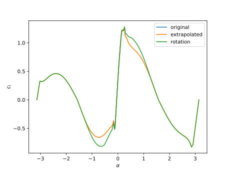 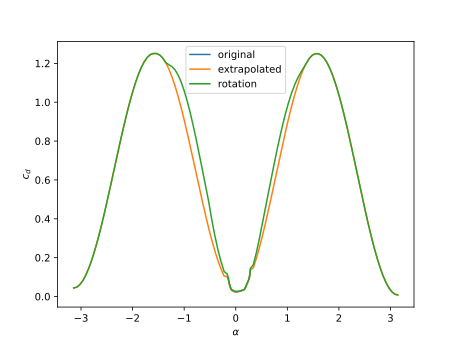
The original data exhibits some numerical noise. We are using this data just for analysis in the tutorial, so that is fine. But for optimization we would likely want to use a smoothing spline on the original data so that our derivatives are well behaved (being careful not to apply to much smoothing to remove actual behavior).
We now save this data in a file so we can reuse it. The info field just leaves an optional header in the file.
af_final = AlphaAF(alpha_rot, cl_rot, cd_rot, "NACA 4412 w/ rotation", 5e4, 0.0)
write_af("naca4412.dat", af_final)Wind Turbine Operation
Nothing changes in the theory to permit operation as a propeller or as a turbine. With sufficient change in twist, or inflow velocity, the lift will switch direction and the blade will change from requiring power to producing power. However, to have an effective wind turbine one would want to flip the camber line so that the direction of a positive angle of attack corresponded to inflow from the "bottom" side of the airfoil (See Theory for more detail on this if interested). Additionally, most of the positive conventions used for wind turbines are opposite those for propellers (directions for induction, twist, etc.). For convenience, setting the turbine flag to true in defining the Rotor will use the positive directions shown below.
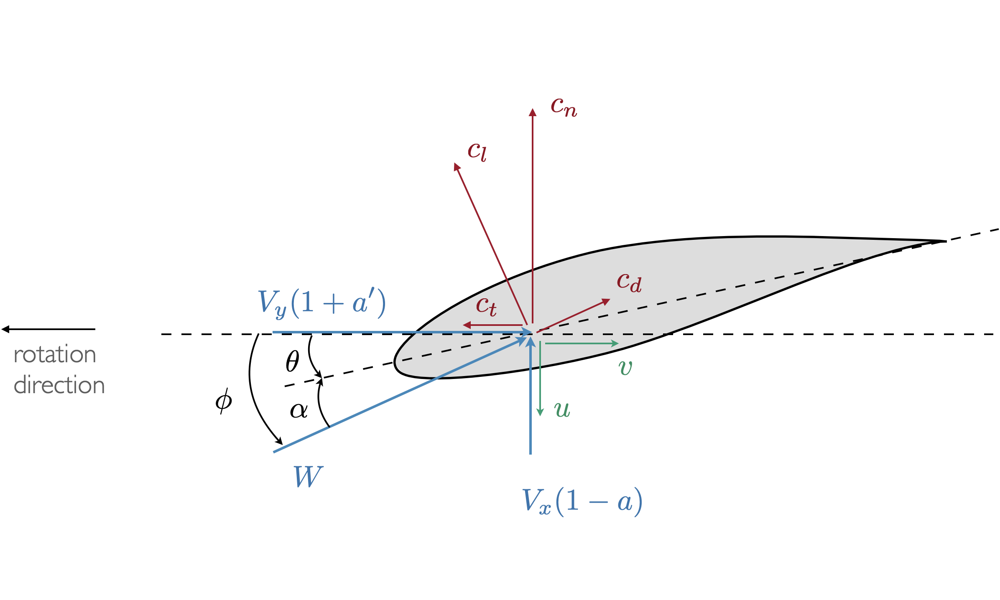
If your application requires operation as both a turbine and a propeller (e.g., airborne wind) then you should pick one convention and stick with it. Switching this flag does not force operation as a turbine, it just changes the convention for positive directions. Those changes are merely a convenience except for camber, which is a design decision.
As an example we will simulate the NREL 5 MW wind turbine. Wind turbines generally have more complex inflow and airfoil schedules as compared to propellers, so this will also serve as a more advanced case compared to the introductory tutorial. First, we load the packages.
using CCBlade
using PyPlotNext, we define the Rotor.
Rhub = 1.5
Rtip = 63.0
B = 3
precone = 2.5*pi/180
rotor = Rotor(Rhub, Rtip, B, precone=precone, turbine=true)Next, we define the Section properties.
r = [2.8667, 5.6000, 8.3333, 11.7500, 15.8500, 19.9500, 24.0500,
28.1500, 32.2500, 36.3500, 40.4500, 44.5500, 48.6500, 52.7500,
56.1667, 58.9000, 61.6333]
chord = [3.542, 3.854, 4.167, 4.557, 4.652, 4.458, 4.249, 4.007, 3.748,
3.502, 3.256, 3.010, 2.764, 2.518, 2.313, 2.086, 1.419]
theta = pi/180*[13.308, 13.308, 13.308, 13.308, 11.480, 10.162, 9.011, 7.795,
6.544, 5.361, 4.188, 3.125, 2.319, 1.526, 0.863, 0.370, 0.106]The airfoils are contained in files. This wind turbine uses 8 different airfoils across the 17 different radial stations. We first load the airfoils, then assign them to the correct stations corresponding to the vector r defined previously.
# Define airfoils. In this case we have 8 different airfoils that we load into an array.
# These airfoils are defined in files.
aftypes = Array{AlphaAF}(undef, 8)
aftypes[1] = AlphaAF("data/Cylinder1.dat", radians=false)
aftypes[2] = AlphaAF("data/Cylinder2.dat", radians=false)
aftypes[3] = AlphaAF("data/DU40_A17.dat", radians=false)
aftypes[4] = AlphaAF("data/DU35_A17.dat", radians=false)
aftypes[5] = AlphaAF("data/DU30_A17.dat", radians=false)
aftypes[6] = AlphaAF("data/DU25_A17.dat", radians=false)
aftypes[7] = AlphaAF("data/DU21_A17.dat", radians=false)
aftypes[8] = AlphaAF("data/NACA64_A17.dat", radians=false)
# indices correspond to which airfoil is used at which station
af_idx = [1, 1, 2, 3, 4, 4, 5, 6, 6, 7, 7, 8, 8, 8, 8, 8, 8]
# create airfoil array
airfoils = aftypes[af_idx]
# define sections
sections = Section.(r, chord, theta, airfoils)We will use the windturbine_op function discussed in Input Structs. The tip-speed ratio is 7.55. We again use broadcasting because the velocities will vary at each radial station r. There is no Reynolds or Mach number variation in our provided airfoil data and so we don't need to specify the viscosity or speed of sound.
# operating point for the turbine
yaw = 0.0*pi/180
tilt = 5.0*pi/180
hubHt = 90.0
shearExp = 0.2
Vinf = 10.0
tsr = 7.55
rotorR = Rtip*cos(precone)
Omega = Vinf*tsr/rotorR
pitch = 0.0
azimuth = 0.0*pi/180
rho = 1.225
op = windturbine_op.(Vinf, Omega, pitch, r, precone, yaw, tilt, azimuth, hubHt, shearExp, rho)We now solve
out = solve.(Ref(rotor), sections, op)and plot the distributed loads:
# plot distributed loads
figure()
plot(r/Rtip, out.Np/1e3)
plot(r/Rtip, out.Tp/1e3)
xlabel("r/Rtip")
ylabel("distributed loads (kN/m)")
legend(["flapwise", "lead-lag"])
savefig("loads-turbine.svg")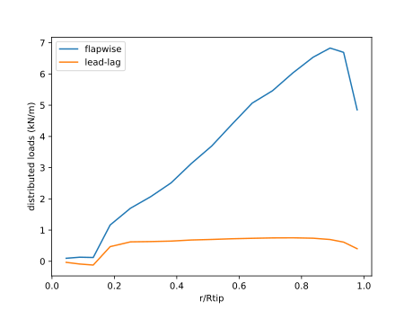
Next, we integrate the loads to get thrust and torque.
T, Q = thrusttorque(rotor, sections, out)(655782.674498623, 3.8283173532172395e6)This would give the thrust and torque assuming the inflow conditions were constant with azimuth (overly optimistic with this case at azimuth=0). If one wanted to compute thrust and torque using azimuthal averaging you would compute multiple inflow conditions with different azimuth angles and then average the resulting forces. This can be conveniently done with broadcasting.
To do this we are broadcast across r and az_angles as a matrix of conditions. We will transpose az_angles into a row vector to make this happen. If uncomfortable with broadcasting, all of these could all be done easily with for loops. Notice that we transpose azangles so that the there is an input column vector for r and input row vector for azangles and the output is then a matrix corresponding to all these combinations. The thrusttorque function is overloaded with a version that accepts a matrix of outputs where outputs[i, j] corresponds to r[i], azimuth[j] then performs an integration using averaging across the azimuthal conditions (or any other parameter).
azangles = pi/180*[0.0, 90.0, 180.0, 270.0]
ops = windturbine_op.(Vinf, Omega, pitch, r, precone, yaw, tilt, azangles', hubHt, shearExp, rho)
outs = solve.(Ref(rotor), sections, ops)
T, Q = thrusttorque(rotor, sections, outs)(582887.6194578927, 2.9845886772847176e6)As a final example, let's create a nondimensional power curve for this turbine (power coefficient vs tip-speed-ratio):
ntsr = 20 # number of tip-speed ratios
tsrvec = range(2, 15, length=ntsr)
cpvec = zeros(ntsr) # initialize arrays
ctvec = zeros(ntsr)
azangles = pi/180*[0.0, 90.0, 180.0, 270.0]
for i = 1:ntsr
local Omega = Vinf*tsrvec[i]/rotorR
local ops = windturbine_op.(Vinf, Omega, pitch, r, precone, yaw, tilt, azangles', hubHt, shearExp, rho)
local outs = solve.(Ref(rotor), sections, ops)
local T, Q = thrusttorque(rotor, sections, outs)
cpvec[i], ctvec[i], _ = nondim(T, Q, Vinf, Omega, rho, rotor, "windturbine")
endfigure()
plot(tsrvec, cpvec)
plot(tsrvec, ctvec)
xlabel("tip speed ratio")
legend([L"C_P", L"C_T"])
savefig("cpct-turbine.svg")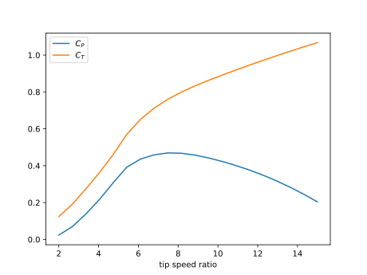
Helicopter Operation
Let's simulate the rotorcraft geometry from this NASA report. The setup is standard to begin with.
using CCBlade
using PyPlotchord = 0.060
theta = 0.0
Rtip = 0.656
Rhub = 0.19*Rtip
B = 3
rotor = Rotor(Rhub, Rtip, B)
r = range(Rhub, Rtip, length=30)
af = AlphaAF("data/naca0012.txt", radians=false)
function af2(alpha, Re, M)
cl, cd = afeval(af, alpha, Re, M)
return cl, cd+0.014 # drag addition per report for Reynolds number adjustment
end
sections = Section.(r, chord, theta, af2)Notice that we put in zero for the freestream speed. As discussed in the Theory document, the method has been extended to handle these special cases (alternatively you can use a small nonzero number, which utilizes the standard theory, but this is prone to occassional numerical noise in the output). Also note that we use the nondimensionalization for helicopters.
rho = 1.225
Omega = 800*pi/30
Vinf = 0.0
nP = 40
pitch = range(1e-4, 20*pi/180, length=nP)
CT = zeros(nP)
CQ = zeros(nP)
FM = zeros(nP)
for i = 1:nP
op = simple_op.(Vinf, Omega, r, rho, pitch=pitch[i])
outputs = solve.(Ref(rotor), sections, op)
T, Q = thrusttorque(rotor, sections, outputs)
FM[i], CT[i], CQ[i] = nondim(T, Q, Vinf, Omega, rho, rotor, "helicopter")
end
sigma = B * chord / (pi * Rtip)Plotting the results against the provided experimental data.
figure()
plot(CT/sigma, CQ/sigma, color="#348ABD")
xlim([0, 0.15])
ylim([0, 0.025])
xlabel(L"C_T/\sigma")
ylabel(L"C_Q/\sigma", rotation=0)
data = [
0.0006486486486486538 0.001826767151767151
0.00021621621621621678 0.0019711018711018706
0.0009729729729729721 0.0024036122661122636
0.0021621621621621644 0.002283134095634097
0.010594594594594595 0.0027378378378378337
0.011351351351351346 0.0026174636174636154
0.012540540540540546 0.0024008316008316023
0.011675675675675679 0.003098154885654885
0.012000000000000004 0.0034346153846153867
0.017081081081081077 0.0035535862785862765
0.01935135135135136 0.0036491943866943863
0.017621621621621626 0.0029765332640332605
0.017081081081081077 0.0028324324324324295
0.019135135135135137 0.0027357848232848203
0.05016216216216216 0.004891787941787941
0.05059459459459458 0.005228222453222447
0.054054054054054064 0.005684121621621619
0.05502702702702702 0.006501195426195424
0.05427027027027025 0.006597531185031182
0.06940540540540538 0.007194854469854465
0.07189189189189188 0.007410602910602908
0.07243243243243241 0.007771049896049893
0.07178378378378378 0.00810774428274428
0.07675675675675675 0.008322895010395012
0.0829189189189189 0.008657952182952181
0.08572972972972973 0.009017853430353426
0.08637837837837836 0.0090176975051975
0.088 0.00923365384615384
0.08637837837837836 0.009570582120582115
0.0937297297297297 0.010602468814968808
0.09448648648648647 0.010265748440748436
0.09848648648648647 0.010841709979209978
0.0963243243243243 0.011178768191268186
0.09448648648648647 0.01264555613305613
0.11589189189189186 0.014948102910602907
0.11794594594594593 0.015139916839916836
0.11816216216216216 0.015284095634095628
0.11805405405405403 0.015596621621621619
0.11502702702702702 0.015621387733887729
0.11956756756756756 0.014586642411642408
0.12054054054054059 0.014850831600831596
0.1211891891891892 0.014850675675675672
]
plot(data[:, 1], data[:, 2], "o", color="#A60628")
text(0.133, 0.014, "BEM", color="#348ABD")
text(0.08, 0.017, "experimental", color="#A60628")
gca().yaxis.set_label_coords(-0.09,1.05)
savefig("rotorcraft1.svg"); nothing # hide
figure()
plot(CT/sigma, FM, color="#348ABD")
xlim([0, 0.15])
ylim([0, 0.7])
xlabel(L"C_T/\sigma")
ylabel("figure of merit", rotation=0)
data = [
0.0007194244604316561 0.0031982942430702765
0.011305241521068862 0.09786780383795313
0.017163412127440908 0.16439232409381654
0.05056526207605345 0.45223880597014926
0.07194244604316546 0.5462686567164178
0.08581706063720454 0.5827292110874199
0.09362795477903393 0.5641791044776119
0.12127440904419323 0.5936034115138591
0.11582733812949644 0.5533049040511726
]
plot(data[:, 1], data[:, 2], "o", color="#A60628")
text(0.12, 0.67, "BEM", color="#348ABD")
text(0.12, 0.5, "experimental", color="#A60628")
gca().yaxis.set_label_coords(0,1.05)
savefig("rotorcraft2.svg");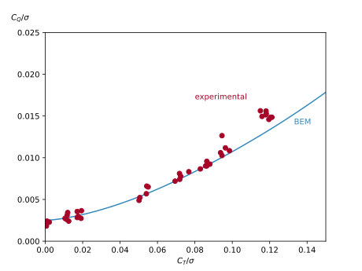 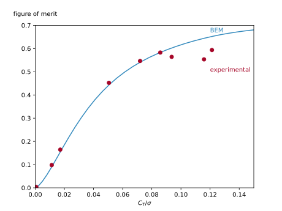
Computing Derivatives
The code is written in a generic enough way to allow for algorithmic differentiation through the entirety of the code. This derivative workflow is not embeded in the package for a few reasons: 1) there are many different possible input/output combinations and trying to handle the most general cases would create a lot of extra data that may not be of interest, 2) there are many different AD packages one might want to use, 3) the code is often connected to others and one might want to AD a longer chain than just around CCBlade. In any case, setting this is up is not too difficult. Below is an example using ForwardDiff and ReverseDiff (note that ReverseDiff currently has an issue with concatenation so you must use version 1.2.0 for this example).
First, let's import some needed packages.
import ForwardDiff
import ReverseDiff
using CCBladeNext, let's define the data for a simple propeller geometry.
D = 1.6
R = D/2.0
Rhub = 0.01
Rtip = D/2
r = range(R/10, stop=9/10*R, length=11)
chord = 0.1*ones(length(r))
proppitch = 1.0 # pitch distance in meters.
theta = atan.(proppitch./(2*pi*r))
function affunc(alpha, Re, M)
cl = 6.2*alpha
cd = 0.008 - 0.003*cl + 0.01*cl*cl
return cl, cd
end
n = length(r)
airfoils = fill(affunc, n)
B = 2 # number of blades
turbine = false
pitch = 0.0
precone = 0.0
rho = 1.225
Vinf = 30.0
RPM = 2100
Omega = RPM * pi/30Both ForwardDiff and ReverseDiff expect a function with a vector input and a vector output. So we will need to create a wrapper function that takes in a vector x, which we parse into the variables of interest. In this case we will compute thrust and torque. This of course can be customized to any outputs of interest. A few parameters: af, B, turbine are discrete, and cannot be differentiated, so we allow them to passthrough from the outer scope. This part would be best wrapped in a function, rather than coming from global scope, but we're not worried about performance for this example.
# parameters that passthrough: af, B, turbine
function ccbladewrapper(x)
# unpack
nall = length(x)
nvec = nall - 7
n = nvec ÷ 3
r = x[1:n]
chord = x[n+1:2*n]
theta = x[2*n+1:3*n]
Rhub = x[3*n+1]
Rtip = x[3*n+2]
pitch = x[3*n+3]
precone = x[3*n+4]
Vinf = x[3*n+5]
Omega = x[3*n+6]
rho = x[3*n+7]
rotor = Rotor(Rhub, Rtip, B; turbine=turbine, precone=precone)
sections = Section.(r, chord, theta, airfoils)
ops = simple_op.(Vinf, Omega, r, rho; pitch=pitch)
outputs = solve.(Ref(rotor), sections, ops)
T, Q = thrusttorque(rotor, sections, outputs)
return [T; Q]
endWe can now evaluate the Jacobian using forward mode AD.
x = [r; chord; theta; Rhub; Rtip; pitch; precone; Vinf; Omega; rho]
J = ForwardDiff.jacobian(ccbladewrapper, x)2×40 Matrix{Float64}:
87.3724 150.316 194.161 220.789 … 0.0 -29.9053 5.45675 123.609
13.452 22.7784 29.1944 33.0688 0.0 -3.7934 0.753034 21.1424The Jacobian in this case is a 2 x 40 matrix because we have 2 outputs and 40 inputs.
We could calculate the Jacobian with reverse mode AD instead. Note that below is not the most efficient way to evaluate in reverse mode, especially if the derivatives will be computed repeatedly for more inputs (see ReverseDiff documentation).
J2 = ReverseDiff.jacobian(ccbladewrapper, x)2×40 Matrix{Float64}:
87.3724 150.316 194.161 220.789 … 0.0 -29.9053 5.45675 123.609
13.452 22.7784 29.1944 33.0688 0.0 -3.7934 0.753034 21.1424We can check that these matricies are nearly identical:
println(maximum(abs.(J - J2)))4.547473508864641e-13Generally, we should compare these derivatives against complex step, but the code is not currently complex safe, so we'll instead compare against central differencing.
import FiniteDiff
J3 = FiniteDiff.finite_difference_jacobian(ccbladewrapper, x, Val{:central})
import Statistics: mean
println(maximum(abs.(J - J3)))
println(mean(abs.(J - J3)))3.1291807545130723e-7
2.060016878191462e-8We can't expect as high of accuracy in comparing these Jacobians due to the limitations of finite differencing.
The Jacobian is in terms of f (outputs) vs x (inputs). For example, if we wanted to know dT/dchord we would use the same indexing we used when parsing x:
dTdchord = J[1, n+1:2*n]11-element Vector{Float64}:
5.626933948750016
21.55288966122351
41.729949022299316
62.50919626197165
82.83709549060946
102.33382961927475
120.64320175777792
137.12087464110516
150.44844950966547
157.67958422576717
169.48493614698015Computing Derivatives More Efficiently
The above method is simple, but not the most efficient. First, most of the time we want to compute the derivatives many times (e.g., during an optimization) and so we should preallocate the Jacobian and populate it in place. Second, the outputs of the wraqpper function are being reallocated many times so we should change that to be done in-place as well. Third, if sparsity exists we should take advantage of it. One case where sparsity occurs is when we are evaluting multiple inflow conditions (e.g., multiple flight states or multiple points on a power curve). Each state/point is independent of the others and so there exists significant sparsity (see theory for more details).
We'll use the same geometry/setup as the previous example, but with a few changes: 1) we used a setup function so that variables are not in the global scope, 2) we allow for more than one inflow conditions (nV) and so instead of 2 outputs there are 2*nV outputs, 3) we modify the outputs in place (hence the use of an exclamation mark in the function name ccbladewrapper! per Julia convention).
using CCBlade
import ForwardDiff
function setup(nV)
chord = 0.10
D = 1.6
RPM = 2100
pitchlength = 1.0 # pitch distance in meters.
turbine = false
Rhub = 0.01
Rtip = D/2
B = 2 # number of blades
R = D/2.0
n = 11
r = range(R/10, stop=9/10*R, length=n)
theta = atan.(pitchlength./(2*pi*r))
chord = chord*ones(n)
function affunc(alpha, Re, M)
cl = 6.2*alpha
cd = 0.008 - 0.003*cl + 0.01*cl*cl
return cl, cd
end
airfoils = fill(affunc, n)
pitch = 0.0
precone = 0.0
if nV == 1
Vinf = [30.0]
else
Vinf = range(29.0, 31.0, length=nV)
end
Omega = RPM * pi/30 * ones(nV)
rho = 1.225 * ones(nV)
x = [r; chord; theta; Rhub; Rtip; pitch; precone; Vinf; Omega; rho]
y = zeros(2*nV)
# parameters that passthrough: airfoils, B, turbine, n, nV
function ccbladewrapper!(y, x)
rp = x[1:n]
chordp = x[n+1:2*n]
thetap = x[2*n+1:3*n]
Rhubp = x[3*n+1]
Rtipp = x[3*n+2]
pitchp = x[3*n+3]
preconep = x[3*n+4]
idx = 3*n+4
Vinfp = x[idx+1:idx+nV]
Omegap = x[idx+nV+1:idx+2*nV]
rhop = x[idx+2*nV+1:idx+3*nV]
rotor = Rotor(Rhubp, Rtipp, B, turbine=turbine, precone=preconep)
sections = Section.(rp, chordp, thetap, airfoils)
ops = simple_op.(Vinfp', Omegap', rp, rhop')
outputs = solve.(Ref(rotor), sections, ops)
for i = 1:nV
T, Q = thrusttorque(rotor, sections, outputs[:, i])
y[i] = T
y[i+nV] = Q
end
return nothing
end
return x, y, ccbladewrapper!
endLet's now use the same ForwardDiff setup we used previously, but now with an output function that modifies in place, and we will preallocate the Jacobian use the jacobian! function that modifies in place (we also preallocate the config see ForwardDiff documentation). We will consider a case with 128 inflow conditions.
nV = 128
x, y, func = setup(nV)
config = ForwardDiff.JacobianConfig(func, y, x)
J = zeros(length(y), length(x)) # preallocate Jacobian
ForwardDiff.jacobian!(J, func, y, x, config) # results stored in JWe can compute the same Jacobian, but take advantage of the significant sparsity that exists. We will make use of the SparseDiffTools package which builds off of ForwardDiff.
import SparseArrays
import SparseDiffTools
Jsparse = SparseArrays.sparse(J) # allocate a sparse matrix
colors = SparseDiffTools.matrix_colors(Jsparse) # determine coloring vector
cache = SparseDiffTools.ForwardColorJacCache(func, x, dx=y, colorvec=colors, sparsity=Jsparse) # allocate cache
SparseDiffTools.forwarddiff_color_jacobian!(Jsparse, func, x, cache) # compute jacobian, results stored in JsparseWe check that both provided the same output.
println(maximum(abs.(J - Jsparse)))0.0Let's now compare computation time.
using BenchmarkTools
t1 = @benchmark ForwardDiff.jacobian!($J, $func, $y, $x, $config)
println(median(t1).time*1e-9) # median time in seconds
t2 = @benchmark SparseDiffTools.forwarddiff_color_jacobian!($Jsparse, $func, $x, $cache)
println(median(t2).time*1e-9) # median time in seconds1.029815524
0.10790321700000001This represents about an order of magnitude speed up by leveraging sparsity.